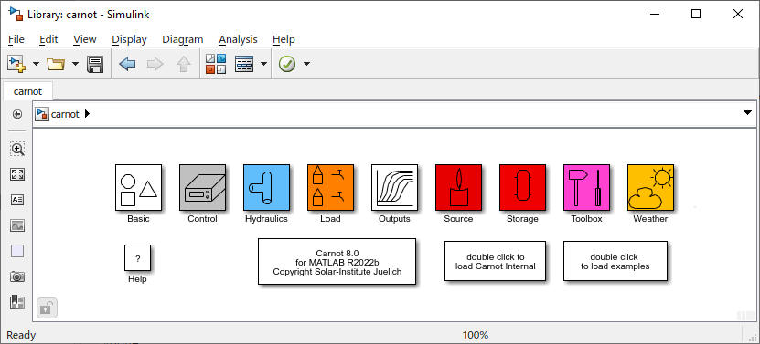
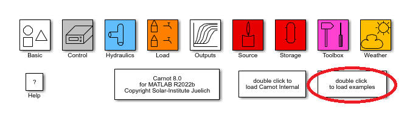

System Requirements
MATLAB and Simulink R2021b or newer
Installation of CARNOT Toolbox
1. Download the Carnot Zip file.
2. Extract the contents of the zip file to [Path_to_Carnot], where
3. [Path_to_Carnot] can be any directory.
4. Run the file "init_carnot" or "init_carnot_savepath.m" from the [Path_to_Carnot]\carnot folder to automatically add folders to the Matlab path.
5. Carnot is installed and ready to run, type "carnot" in the command window to open it.
NOTE : The included S-functions have been compiled with
MinGW64 GCC-Version 6.3 as available through the Matlab AddOn Explorer
If you change something in the C-file or expand the
Library with another compiler problems may arise.
Warning: Please do not mix two compilers; this will cause unexpected results. So if you want to use other compilers (or versions), please re-compile Carnot before running your simulations.
To start-up the CARNOT Library open MATLAB and enter
in the command line. The CARNOT Library pops up. To build a new system, open a new model and copy the desired components from the Library to your model by dragging and dropping, or by the using the commands in the context menu.
To see the CARNOT demonstrations, double click on the “Load Examples” Block in the Library. Choose a demonstration by selecting it from the Pop-up menu.
For HTML-help type
helpcarnot
in the MATLAB command window or
double click on the
"?"
block in the CARNOT Library.
For more information on the
manual consult the next chapter.
This chapter explains the options concerning the use of
online help, written in HTML format.
There are different possibilities to create a link to the manual, depending on
the active window:
Accessing the Online Help from the MATLAB Command Window
As the CARNOT Toolbox is written for the MATLAB/SIMULINK environment, MATLAB is always active. So you can change to the MATLAB Command Window at any time. To access the manual from the command window, there are two possibilities that are controlled and executed by the M-file
helpcarnot.m
which is found in your CARNOT directory:
[CARNOT]\public\src_m\
Typing the command
helpcarnot
in the MATLAB command window opens the Online help manual.
Typing the command
Accessing the Online Help from the CARNOT Library
From the CARNOT Library you have direct access to the Online help. You just have to double click on the "?" block and the Online help commences.
Accessing the Manual from Block Masks
If you are in a CARNOT model window and you need information
about a specific CARNOT block, you can open the Block Reference from the block’s
mask.
Double click on the block and click on the Help button in the mask. The manual
will open at the corresponding page. However this will only function in the case
of masked blocks. For information on unmasked blocks you have to access the help
window differently (s. above).
Accessing the Manual from the Browser
Another possibility is to open the manual directly in the
browser without launching MATLAB.
The files of the manual are located in the directory
[CARNOT]\public\tutorial\doc\manual.html
The CARNOT Toolbox is a library for MATLAB/SIMULINK. It contains elements that are
required for the simulation and calculation of conventional and renewable energy
systems.
The CARNOT Toolbox provides tools for the easy design, analysis and simulation
of energy systems for use both in the conventional field as well as the field of
regenerative systems, with components like solar collectors. Because of the
mathematical features of MATLAB and the simplicity of the SIMULINK block diagram
interface, it is a powerful tool for all engineers involved in the field of
domestic heating and similar areas.
The structure of the CARNOT Toolbox is similar to SIMULINK itself. The elements are organized in blocksets that contain the blocks of one subject. There are blocksets that contain the models of the components of energy systems (like pumps, storage tanks etc.) and other blocksets to observe and display the simulation results.
The toolbox has the following features that bring some advantages to actual simulations in the field of energy systems:
The CARNOT Library contains the fundamental blocksets for heating system components. The blocks available in the CARNOT Library allow for sophisticated modelling, as the parameters of the blocks can be customized by the user.
Blocks for the calculation of material properties
and basic functions are included
which are useful tools for simulating thermal processes.
The CARNOT Library was developed for advanced application in complex models.
There are several options to build up systems and define parameters.
The CARNOT library consists of the following blocksets:

Figure 1.1 : The CARNOT Library
In the following section, an overview of the included blocksets is given. For a more detailed description of the blocks’ features consult the Block Reference at the end of this manual.
Basic
The “Basic” blockset contains some useful function for the calculation of fluid dynamic values and characteristic numbers, e.g. the Reynolds- or Prandtl number, and the velocity or pressure_drop.
Basic\Material_Properties
In this subsection of the “Basic” blockset the material
properties of the basic heating fluids are calculated in functions that are
collected in the
Carlib Library.
The Library actually contains functions for the calculation of the following fluids:
Visualization blocks for displaying the mass flow rate, the
temperature and the pressure included in the
THB (Thermo-Hydraulic-Bus)
which contains all the information about the actual state of the fluid and is
passed from block to block, during the simulation.
In this blockset the models for weather simulation can be
found. Weather data
is required for the input values for a large number of blocks, for example as
input values to the collector in the form of radiation data. Weather data is
processed for different time periods, from monthly average values to hourly
values. The pre-processing weather generator includes discrete models for the
weather variables radiation, temperature, relative humidity and wind speed.
Blocks for the processing and adaptation of weather data
are included, e.g. recalculation of radiation data on inclined surfaces and
adding azimuth and zenith angle of the sun for a specified location.
The part in Sources/Simple corresponds to the SIMULINK Sources Blockset. The
Blockset "Sources" contains models of
various heat sources for energy systems, for example heat exchangers, heat Pumps
and electric heating. Renewable components are included, with a solar flat plate
collector and a parabolic trough collector. You may adapt the collector model to
other collector-types (see "specifying the collector from the subsystem").
This blockset sports elementary hydraulic elements which are
found in house heating systems used to build hydraulic circuits. The common
hydraulic elements such as valves, Tee-pieces and pipe connections are
contained. The hydraulic sources can be found here (e. g. pump and thermosyphon
blocks).
The pumps differ in the way they calculate the mass flow rate. Different models
for the pump characteristics include pumps with constant mass flow rate, pumps
with customizable characteristic, pumps with manufacturer fitted characteristics
and as mentioned above pumps with a thermosyphon.
This blockset is consists of different kinds of water and
ground storage tanks. Various models are included from a simple water storage
system to storages with heat exchangers and water supply at
user definable positions, as well as two ground storage models.
This blockset contains some hydraulic and thermal loads,
like houses, rooms and water taps.
Note: Radiators are to be found under Source\Heat_Exchanger
The blockset contains blocks from the measuring and control
domain. Sensor blocks are included for temperature, mass flow and climatic
conditions. The temperature sensors come without a time delay to model the real
behaviour of measurement cycles.
This Blockset contains a PV generator and an inverter model.
Use the library in the same way as you would use SIMULINK. If you are not familiar with building models in SIMULINK have a look at the SIMULINK help.
Open the CARNOT Library by typing
in the MATLAB command window. Open a new model from the file menu. Drag and drop the blocks from the library into your system.
Components are connected with a Thermo-Hydraulic Bus (THB), the common data structure to represent a fluid in the CARNOT
Toolbox. This vector contains all necessary information about the flow and the
energy transfer associated with it.
To compute and display a specific physical value using the bus, special blocks
have been built that extract the desired physical value from the THB
automatically, e.g. there are displays that extract only the temperature from
the THB input (contained in the blockset
Outputs).
As CARNOT performs calculations of hydraulics and heat
transfer simultaneously, you have to ensure that both aspects of the flow are
considered. Thus a cycle has to contain a hydraulic source
in every case, i.e. a pump or the water tap, otherwise an error message of an
erroneous feedback connection will appear.
If you would like to simulate thermal systems, a
thermal source, e. g. a collector or a
heat exchanger has to be included in your model. The hydraulic and
thermal state of the flow is calculated in every block. The hydraulic
side is a somehow simplified model (see the different models of the
pumps). The
heat_source blocks are not essential
for the function of the calculation, but if you want to analyse
thermal systems, heat sources have to be included.
Take care, that you connect the right input ports to the corresponding output
port of the preceding block, since there is no checking for consistency.
If you feed, for example, the power consumption of a pump to the temperature
setpoint "Tset" inlet port of a thermostatic valve, no error message appears as
long as the number of expected input arguments of this port corresponds to the
number of values fed to this inlet port.
The systems built with CARNOT are prone to algebraic loops and stiff differential equations. In general, the use of a stiff solver will help to get faster convergence. Check your results using a different solver (Dormand-Prince should be reference).
In order to split the fluid stream, it is necessary to use a diverting component such as one of the flow diverters and downstream a mixing block, e. g. the flow mixer which are both contained in the Hydraulics blockset. Pay particular attention to the block ports, because in cycles with flow diversion there is often a feedback of information, for example the diverting factor (in fixed rate components) or the pressure drop (in components with variable diversion factor) from the mixing component to the diverting component.
To learn more about the calculation system of circuits with flow distribution over two or more branches read the paragraph on pressure drop in the next chapter.
NOTE If you do long-running simulations with CARNOT, do not forget to switch-off saving Workspace Variables, since these options take up a lot of memory space under these circumstances (typical simulated time period in the order of a year)
The CARNOT Toolbox contains examples or demonstrations to give a first impression of how a model could look, and demonstrate how components are connected and how the output is displayed. To run a demonstration double-click on the "Load Examples" Block in the CARNOT Library. Choose an example from the Explorer Window that opens.

Figure 1.3: Choice of
CARNOT examples
Another possibility to choose a demonstration is to go the path
<matlabroot\toolbox\carnot\tutorial\examples
and type
ls *.slx
in the MATLAB command window.
A list of the models included will appear and the demonstration can be opened by
typing the name in the workspace.